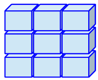

Welcome to this exercise!

Learning goals
In this tutorial, we will explore the different types of objects that we have in R and figure out how to work with them. Specifically, we will cover the following:
- How to create different types of objects (vectors, matrices, data frames) from scratch.
- How to select, subset and name elements of these different objects.
- How to merge different objects.
Quick Recap
In general, there are different data types which define how data are stored internally in R and which operations you are allowed to perform on these data. For instance, it seldomly will make sense to perform mathematical operations on a character string. On the other hand, object types refer to where data are stored such that you can assess it.
Data Types
- numeric values
- character strings
- logical values
- factors
Object Types
- vectors
- matrices
- data frames
- lists
Note that at this point of the course, we are not yet working with “observed” data such as data from a survey program or experiment. This is something that we will reserve for the next thematic block on Data Manipulation. So far, we are merely creating our own data from scratch.
Let’s create and inspect some objects! 😄
Data Format: Vector

Creating Vectors

Let’s start out with vectors. As you know, there are numeric, character and logical vectores. Let’s say we want a numeric vector comprising the numbers 3.7, 3.0, 4.0, 4.0, 3.7. How do we assign this set of numbers to a vector?
The c() function combines single values to a vector:
numeric_vec <- c(3.7, 3.0, 4.0, 4.0, 3.7)
numeric_vecOf course, this works equally for character and logical vectors:
char_vec <- c("Austria", "Germany", "UK", "Brazil", "UK")
char_veclogical_vec <- c(TRUE, FALSE, TRUE, T, F) # you can abbreviate 'TRUE' and 'FALSE' with 'T' and 'F'
logical_vecWorking With Vectors
Now that we have created our first vectors, let’s build some intuition on what we can do with these objects. Given that we have a numerical vector, we can execute mathematical functions on each element of the vector.
log(numeric_vec) # calculate the natural logarithm of each element in numeric_vec
numeric_vec * -1 # turn numeric_vec into negative numbersAlternatively, there are functions that you can use on the vector as a whole.
sum(numeric_vec) # calculate the sum of all values
round(numeric_vec, digits=0) # round all elements to integersOf course, mathematical operations will not work on character vectors.
sum(char_vec) # this command will produce an error as char_vec is not numericHowever, other functions can operate well on character vectors.
nchar(char_vec) # calculate number of characters for each element
length(char_vec) # calculate length of whole vector
substring(char_vec, 1, 3) # extract first three characters from each elementIf you want to read up on any of these functions’ functionality, type (e.g.) help(substring) in the code chunk above or in your RStudio console.
Data Format: Matrix

Matrices are the most genuine rectangular, that is two-dimensional, data format in R.
A matrix consists of n rows and k columns and hence has the dimensionality n x k.
All values in a matrix need to be of the same type. If this is not the case, R will convert them into a common type.
Creating Matrices

Let’s start out by creating a matrix and defining all values manually.
matrix_example <- matrix(1:20, nrow = 4, ncol = 5) # create numeric matrix
matrix_exampleAlternatively, we can bind several vectors of the same class into a matrix, for instance by using the cbind() function. Let’s first construct two numerical vectors as samples from normal distributions with different population means.
# define
group1 <- rnorm(n = 500, mean = 2, sd = 2) # sample 500 values from N(2,1)
group2 <- rnorm(n = 500, mean = 5, sd = 2) # sample 500 values from N(4,1)This is how the distribution of values looks like for the two groups.
hist(group1, breaks=100, xlab="Values", main="Distribution for Both Groups", xlim=c(-5,10)) # create histogram for group1
hist(group2, breaks=100, col="orange", add=T) # add historam for group2To bind them into a single matrix object, execute
group_matrix <- cbind(group1, group2) # column-bind both vectors
head(group_matrix) # inspect first couple of rows Working With Matrices
Just as was the case with vectors, R holds available a couple of functions that work well with matrix objects. For example, we might just want to inspect the dimensionality of the matrix.
dim(group_matrix) # dimensionality of the matrix
nrow(group_matrix) # number of rows
ncol(group_matrix) # number of columns
length(group_matrix) # what does length() refer to here? Can you tell?Alternatively, we can perform some calculations. colMeans() gives us the mean values per column (group).
colMeans(group_matrix)Data Format: Data Frame

Data frames are R’s equivalent to data sets as you might know them from Stata, SPSS or other programs.
Just as matrices, a data frame consists of n rows and k columns and hence has the dimensionality n x k.
Note: Data frames can store variables of different classes.
Creating Data Frames

Let’s go back to the three vectors that we have constructed in one of the previous examples. Although these were different data types (numeric, character, logical), we can bind them into a single data frame such as the ones that we are analyzing in our daily work as social scientists. As it is often the case in R, there are many ways to do this. One way to go consists of simply wrapping the function data.frame() around all three vectors that we have created earlier.
df_example <- data.frame(numeric_vec,
char_vec,
logical_vec
) # construct data frame
df_example # print data frameAlternatively, although this is probably something that you will do less of the time, we could manually insert all values of the data frame.
df_example <- data.frame(
numeric_vec = c(3.7, 3.0, 4.0, 4.0, 3.7),
char_vec = c("Austria", "Germany", "UK", "Brazil", "UK"),
logical_vec = c(TRUE, FALSE, TRUE, T, F)
)
df_example # print data frameWorking With Data frames
Data frames are probably the most useful object class that R holds ready for applied data analysis. There are a couple of ways how we can inspect the content of data frames a little closer.
str(df_example)summary(df_example)Both the str() and the summary() function provide you with valuable insights about the data that you have at hand. So far, our data simply consists of three variables with the rather uninformative names numeric_vec, char_vec, and logical_vec. What if these data were collected on applicants of a particular university and actually grasp
- their GPA scores
- country of origin
- whether they were ultimately admitted
Let’s rename the variables (columns) of this data frame by
colnames(df_example) <- c("GPA", "country", "admitted")
df_exampleWe can rename a single column (for example the first column) by
colnames(df_example)[1] <- "gpa"
df_exampleVoilà!
Data Format: List

Lists just bind any number of objects together, even if these are of different classes.
A list can contain a value, a vector, a matrix, a dataframe - or several of these!
my_list <- list(numeric_vec, char_vec, logical_vec, group_matrix, df_example) # construct list
my_list # print outExercise 1
Vectors
Exercise 1a. Now it’s your turn! Create a numerical vector called gpas comprising the numbers 4.0, 2.9, 3.0, 3.7 using the c() function. Afterwards, calculate the mean of this vector using mean(). Fill up the code chunk below. Afterwards, click Submit Answer.
gpas <- # ...
mean() Hint: Your answer should comprise three lines of code. The first line generates an object gpas using the assignment operator <-. The second and third lines perform arithmetic calculations on this object using mean() and sd().
View solution
gpas <- c(4.0, 2.9, 3.0, 3.7)
mean(gpas)
Exercise 1b. Now, calculate the standard deviation of gpa scores in your vector.
Hint: Execute the function sd() and pass the argument gpas to that function..
View solution
sd(gpas)
Exercise 1c. Consider the object manifest that you can print out below. Find out the following:
- What object class does
manifesthave? - How many characters does it entail?
- Extract the first 56 characters from
manifest.
print(manifest)Hint: Check the object class using class() or typeof(). Count the number of characters using nchar(). Extract the first 56 characters using substring().
View solution
class(manifest)
nchar(manifest)
substring(manifest, 1, 56)
Exercise 1d.
View solution
Options 2, 3 and 4 are correct.
If you had troubles with the multipe choice Exercise 1d: Try out what’s happening here! What does each function do?
print(manifest_13)
length(manifest_13)
nchar(manifest_13)Matrices
Exercise 1e. Below, you see the GPA scores of the top 100 applicants of a high-ranked US-university across time. They are stored in the vectors gpa_2018, gpa_2019, gpa_2020, gpa_2021, gpa_2022.
- Column-bind all five vectors into one joint matrix called
gpas. - Calculate the mean GPA score per year using
colMeans(). Did average performance of applicants improve?
gpa_2018
gpa_2019
gpa_2020
gpa_2021
gpa_2022
# ... column-bind into a joint matrix
# ... calculate the mean GPA score per yearHint: Column-bind the five vectors with cbind(). Calculate the mean score per year using colMeans().
View solution
gpas <- cbind(gpa_2018, gpa_2019, gpa_2020, gpa_2021, gpa_2022)
colMeans(gpas)
Data frames
Exercise 1f. In the code chunk below, you have loaded the data set from the European Social Survey Wave 10 (collected 2020-2022).
- How many observations does this data frame have?
- How many variables?
- What are the variable names?
ess10 Hint: You can check the number of observations with nrow(). The number of variables can be checked with ncol(). Both questions can be answered with str() or dim(). You can get the variable names using colnames().
View solution
nrow(ess10)
ncol(ess10)
colnames(ess10)
Selecting Elements in Vectors, Matrices and Data Frames

Selecting Single Elements
Often, we want to access single elements from R objects. The main selection operator for vectors, matrices and data frames is [ ]. Do you remember the object char_vec, a character vector that stored a sequence of countries? Let’s first print it out, and then select the first and last observation in this vector.
print(char_vec)
char_vec[1] # first observation
char_vec[5] # last observationAn alternative to get the last observation is to simply use the tail() function.
tail(char_vec, 1)If you want to select all elements except the first one, type
char_vec[-1] # select all but first elementIf you want to select all elements except the country UK, type
char_vec[-which(char_vec=="UK")] # # select all but UKSequences and Repetitions
This last code chunk has already hinted towards a general fact in R: We can select (or subset) multiple elements from a vector at once. To navigate this securly, it is useful to learn about repetitions and sequences.
A repetition simply takes an object and then replicates it a certain amount of time. For instance, using the rep() function, we can replicate the element “Germany” an arbitrary number of times and store the result in a new vector.
germany_vec <- rep("Germany", 50)
germany_vecEven more handy for subsetting are sequences. In general, there are two ways to generate a sequence of values. First, R’s built in function : builds an integer sequence of values ranging from the numeral on the left to the numeral on the right.
1:10 # creating a sequence of integers from 1 to 10The seq() function lets you specify the gaps in the sequence manually. For instance, let’s say we would like to generate a sequence of values from 1 to 10 in steps of 2.
seq(from = 1, to = 10, by = 2)We can use this functionality for subsetting! Let’s say we want to extract only the first three elements from char_vec.
char_vec[1:3] # select first three elementsWhat about the first, third and fifth element?
char_vec[seq(from = 1, to = 5, by =2)] # select first, third and fifth elementSubsetting Cases and Variables
In the case of matrices and data frames, we are working with two-dimensional objects. Consider our data frame df_example which stored data from five applicants of a particular university and information on their GPA scores, country of origin and whether the applicant was admitted or not.
df_exampleLet’s inspect how subsetting works on two-dimensional objects.
df_example[1,] # this subsets the first row, so all data for the first applicant
df_example[,1] # this subsets the first column (variable)
df_example[1,2] # this selects the country of the first applicantAlternativey, we can also denote columns by their name directly (rather than numeric index.)
df_example[1,"country"] In case of data frames, variables can also be selected using the $-operator.
df_example$countryExercise 2
Subsetting Vectors
Exercise 2a. Now it’s your turn! Select the last element of the vector manifest_13.
Hint: You can simply subset with [ ].
View solution
manifest_13[6]
Exercise 2b. Select the second and fourth element of the vector char_vec.
Hint: You can simply subset with [ ]. If you want the second and fourth element, try to combine these numbers with c() before subsetting.
View solution
char_vec[c(2,4)]
Subsetting Data Frames
Exercise 2c. Select the variable admitted from the data frame df_example.
Hint: You can subset either with [ , ] or, since the object is a data frame, using the $-operator.
View solution
df_example$admitted
df_example[,3] # identical
Exercise 2c. Select the last observation (row) within the data set df_example.
Hint: You can subset with [ , ].
View solution
df_example[nrow(df_example),]
df_example[5,] # identical